Asahi
Asahi · Yamagata
Asahi
Highlighted on the Yamagata map.
Stay
Ａｓａｈｉ自然観
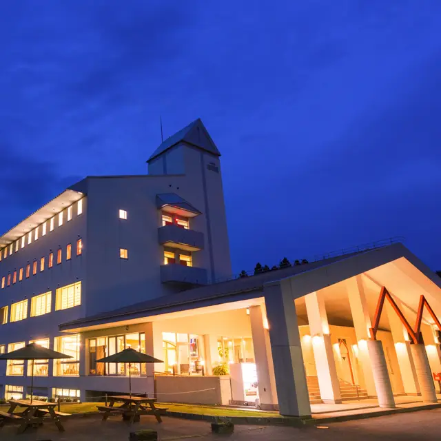
Asahi Shizenkan
Lodge in Asahi, Yamagata.
Ｄａｉｃｈａｎ Ｆａｒｍ Ｇｕｅｓｔ Ｈｏｕｓｅ
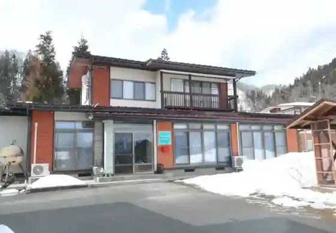
Daichan Farm Guest House
Farm guesthouse in Asahi, Yamagata.
Dining
そば屋 亀次郎
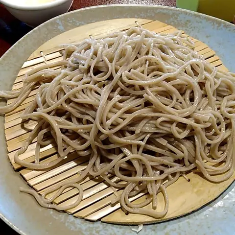
Soba Ya Kamejirou
Soba restaurant in Asahi, Yamagata.
そば処 太郎亭
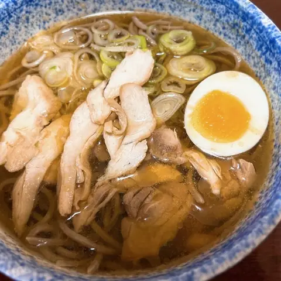
Soba Tokoro Tarou Tei
Soba restaurant in Asahi, Yamagata.
Ten膳
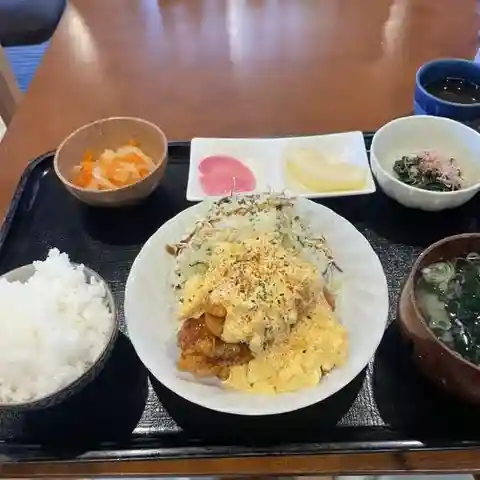
Ten Zen
Shokudo diner in Asahi, Yamagata.
道の駅あさひまち リンゴの森
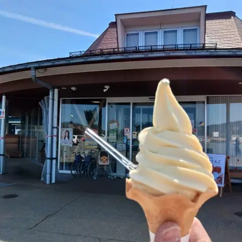
Michi No Eki Asahimachi Ringo No Mori
Roadside-station eatery in Asahi, Yamagata.
秋葉亭
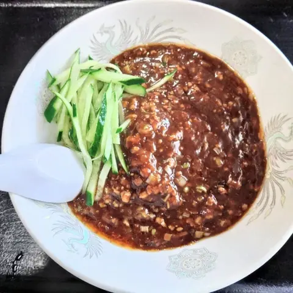
Akiba Tei
Chinese restaurant in Asahi, Yamagata.
朝日鉱泉ナチュラリストの家
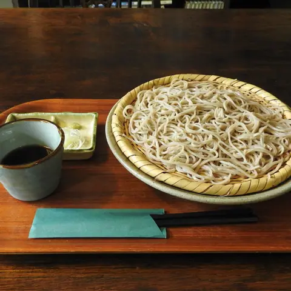
Asahi Kousen Nachurarisuto No Ie
Inn restaurant in Asahi, Yamagata.
Asahi自然観
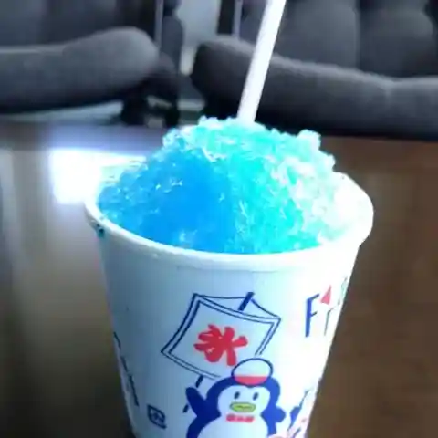
Asahi Shizenkan
Hotel restaurant in Asahi, Yamagata.
徳助本舗
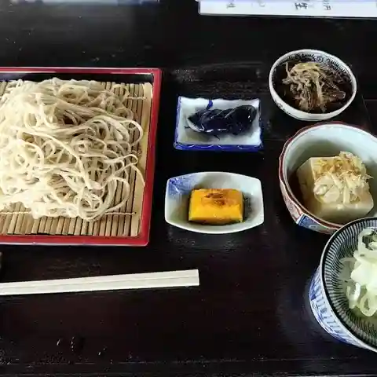
Tokusuke Honpo
Soba restaurant in Asahi, Yamagata.
蕎楽
Kyou Raku
Soba restaurant in Asahi, Yamagata.
新華樓
Shinka Rou
Ramen shop in Asahi, Yamagata.
番外地
Bangai Chi
Izakaya in Asahi, Yamagata.
真理夢
Shinri Yume
Coffee shop in Asahi, Yamagata.
パン屋 Boule
Pan Ya Boule
Bakery in Asahi, Yamagata.
割烹旅館 大丸屋
Kappou Ryokan Daimaru Ya
Inn restaurant in Asahi, Yamagata.
りんご温泉 レストラン
Ringo Onsen Resutoran
Shokudo diner in Asahi, Yamagata.
AkiSpace
Akispace
Café in Asahi, Yamagata.
楽家
Gakuke
Ramen shop in Asahi, Yamagata.
永勝堂菓子店
Eishou Dou Kashi Mise
Cake shop in Asahi, Yamagata.
スジェール
Sujieeru
Yoshoku (Western-style) restaurant in Asahi, Yamagata.
カフェ蔵
Kafe Kura
Café in Asahi, Yamagata.
カフェ いろは
Kafe Iroha
Café in Asahi, Yamagata.
オレンジの屋根
Orenji No Yane
Western sweets shop in Asahi, Yamagata.
スープカレー＆パン Y
Suupukaree & Pan Y
Soup-curry restaurant in Asahi, Yamagata.
Sights
Kuki Shrine (Air Shrine)
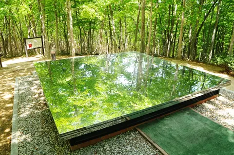
The only shrine in the world whose object of worship is air itself. It was built in July 1990 to give thanks for the blessings of air and to pass a clean Earth on to future generations; this environmental monument stands in a beech forest.
Michi no Eki Asahimachi
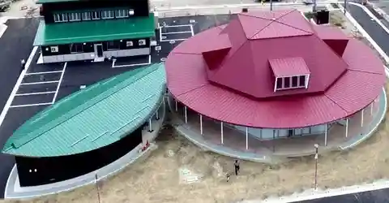
Asahi is known as the birthplace of bagless-grown Fuji apples. From August to around February the farm-direct corner stocks a changing range of seasonal apples, plus a wide choice of freshly picked vegetables.